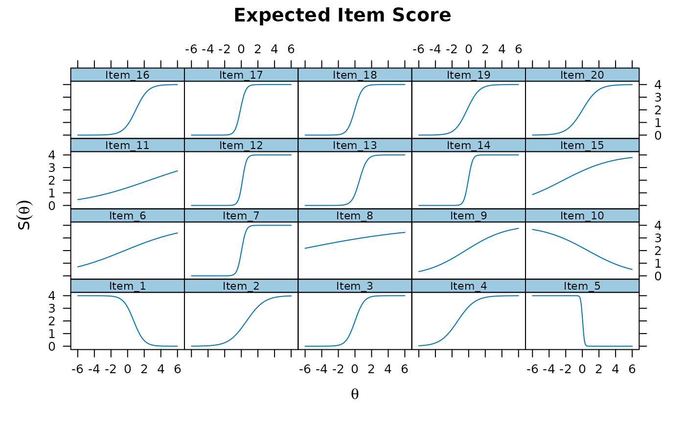
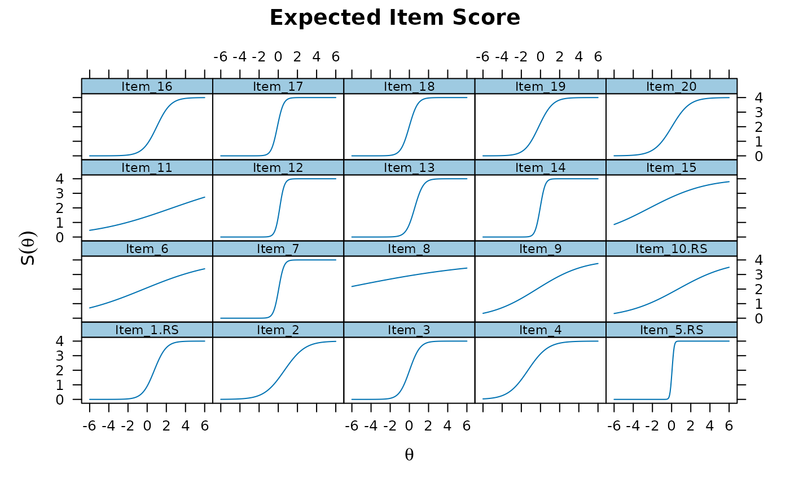

Reverse score specific items given empirical range or specific scoring range.
Arguments
- data
an object of class
data.frame,matrix, ortablewith the response patterns- which
names of items or column integer location in
datathat should be rescored. If missing the all columns indatawill be reverse scored- range
(optional) a named
listto specify the low and high score ranges. Specified names must match the names found indata, and each element of this list should contain only two values. If items specified inwhichare omitted from this list then the empirical min/max information will be used instead- append
character vector indicating what to append to the item names that have been rescored
Value
returns the original data object with the specified
items reverse scored replacing the original scoring scheme
References
Chalmers, R., P. (2012). mirt: A Multidimensional Item Response Theory Package for the R Environment. Journal of Statistical Software, 48(6), 1-29. doi:10.18637/jss.v048.i06
Author
Phil Chalmers rphilip.chalmers@gmail.com
Examples
a <- rlnorm(20)
a[c(1,5,10)] <- -a[c(1,5,10)]
diffs <- t(apply(matrix(runif(20*4, .3, 1), 20), 1, cumsum))
diffs <- -(diffs - rowMeans(diffs))
d <- diffs + rnorm(20)
dat <- simdata(a,d,itemtype='graded', N=300)
head(dat)
#> Item_1 Item_2 Item_3 Item_4 Item_5 Item_6 Item_7 Item_8 Item_9 Item_10
#> [1,] 0 1 4 4 0 3 4 4 4 2
#> [2,] 1 1 4 4 0 3 4 2 3 2
#> [3,] 0 3 4 4 0 1 4 4 4 4
#> [4,] 4 3 4 4 0 0 4 4 3 4
#> [5,] 3 3 2 1 0 0 4 1 4 4
#> [6,] 4 3 0 4 4 0 0 4 3 4
#> Item_11 Item_12 Item_13 Item_14 Item_15 Item_16 Item_17 Item_18 Item_19
#> [1,] 1 4 4 4 4 3 4 4 4
#> [2,] 0 0 4 2 4 0 0 2 3
#> [3,] 0 4 4 4 4 4 4 2 4
#> [4,] 0 0 2 4 3 4 4 2 2
#> [5,] 1 4 0 2 0 4 3 4 3
#> [6,] 3 1 0 0 3 0 0 0 3
#> Item_20
#> [1,] 4
#> [2,] 4
#> [3,] 0
#> [4,] 3
#> [5,] 1
#> [6,] 0
# \donttest{
# fitted model has negative slopes due to flipped scoring
mod <- mirt(dat)
#>
Iteration: 1, Log-Lik: -7678.065, Max-Change: 2.85674
Iteration: 2, Log-Lik: -6957.835, Max-Change: 1.81707
Iteration: 3, Log-Lik: -6825.283, Max-Change: 1.57245
Iteration: 4, Log-Lik: -6786.911, Max-Change: 0.94875
Iteration: 5, Log-Lik: -6777.267, Max-Change: 0.95074
Iteration: 6, Log-Lik: -6773.524, Max-Change: 0.71314
Iteration: 7, Log-Lik: -6770.919, Max-Change: 0.19847
Iteration: 8, Log-Lik: -6770.042, Max-Change: 0.49380
Iteration: 9, Log-Lik: -6769.540, Max-Change: 0.48079
Iteration: 10, Log-Lik: -6769.059, Max-Change: 0.10910
Iteration: 11, Log-Lik: -6768.856, Max-Change: 0.04608
Iteration: 12, Log-Lik: -6768.839, Max-Change: 0.00370
Iteration: 13, Log-Lik: -6768.838, Max-Change: 0.01785
Iteration: 14, Log-Lik: -6768.829, Max-Change: 0.00249
Iteration: 15, Log-Lik: -6768.826, Max-Change: 0.01501
Iteration: 16, Log-Lik: -6768.821, Max-Change: 0.00143
Iteration: 17, Log-Lik: -6768.819, Max-Change: 0.00398
Iteration: 18, Log-Lik: -6768.817, Max-Change: 0.00055
Iteration: 19, Log-Lik: -6768.817, Max-Change: 0.00105
Iteration: 20, Log-Lik: -6768.816, Max-Change: 0.01325
Iteration: 21, Log-Lik: -6768.814, Max-Change: 0.00134
Iteration: 22, Log-Lik: -6768.814, Max-Change: 0.00144
Iteration: 23, Log-Lik: -6768.813, Max-Change: 0.00047
Iteration: 24, Log-Lik: -6768.813, Max-Change: 0.00015
Iteration: 25, Log-Lik: -6768.813, Max-Change: 0.00015
Iteration: 26, Log-Lik: -6768.813, Max-Change: 0.00374
Iteration: 27, Log-Lik: -6768.813, Max-Change: 0.00095
Iteration: 28, Log-Lik: -6768.812, Max-Change: 0.15136
Iteration: 29, Log-Lik: -6768.799, Max-Change: 0.00021
Iteration: 30, Log-Lik: -6768.799, Max-Change: 0.00293
Iteration: 31, Log-Lik: -6768.799, Max-Change: 0.00101
Iteration: 32, Log-Lik: -6768.798, Max-Change: 0.00079
Iteration: 33, Log-Lik: -6768.798, Max-Change: 0.00079
Iteration: 34, Log-Lik: -6768.798, Max-Change: 0.00027
Iteration: 35, Log-Lik: -6768.798, Max-Change: 0.00012
Iteration: 36, Log-Lik: -6768.798, Max-Change: 0.00059
Iteration: 37, Log-Lik: -6768.798, Max-Change: 0.00021
Iteration: 38, Log-Lik: -6768.798, Max-Change: 0.00059
Iteration: 39, Log-Lik: -6768.798, Max-Change: 0.00040
Iteration: 40, Log-Lik: -6768.798, Max-Change: 0.00015
Iteration: 41, Log-Lik: -6768.798, Max-Change: 0.00059
Iteration: 42, Log-Lik: -6768.798, Max-Change: 0.00028
Iteration: 43, Log-Lik: -6768.798, Max-Change: 0.00012
Iteration: 44, Log-Lik: -6768.798, Max-Change: 0.00059
Iteration: 45, Log-Lik: -6768.798, Max-Change: 0.00023
Iteration: 46, Log-Lik: -6768.797, Max-Change: 0.00012
Iteration: 47, Log-Lik: -6768.797, Max-Change: 0.00059
Iteration: 48, Log-Lik: -6768.797, Max-Change: 0.00020
Iteration: 49, Log-Lik: -6768.797, Max-Change: 0.00012
Iteration: 50, Log-Lik: -6768.797, Max-Change: 0.00059
Iteration: 51, Log-Lik: -6768.797, Max-Change: 0.00018
Iteration: 52, Log-Lik: -6768.797, Max-Change: 0.00012
Iteration: 53, Log-Lik: -6768.797, Max-Change: 0.00059
Iteration: 54, Log-Lik: -6768.797, Max-Change: 0.00017
Iteration: 55, Log-Lik: -6768.797, Max-Change: 0.00012
Iteration: 56, Log-Lik: -6768.797, Max-Change: 0.00059
Iteration: 57, Log-Lik: -6768.797, Max-Change: 0.00016
Iteration: 58, Log-Lik: -6768.797, Max-Change: 0.00012
Iteration: 59, Log-Lik: -6768.797, Max-Change: 0.00059
Iteration: 60, Log-Lik: -6768.797, Max-Change: 0.00016
Iteration: 61, Log-Lik: -6768.797, Max-Change: 0.00012
Iteration: 62, Log-Lik: -6768.797, Max-Change: 0.00059
Iteration: 63, Log-Lik: -6768.797, Max-Change: 0.00015
Iteration: 64, Log-Lik: -6768.797, Max-Change: 0.00012
Iteration: 65, Log-Lik: -6768.797, Max-Change: 0.00058
Iteration: 66, Log-Lik: -6768.797, Max-Change: 0.00015
Iteration: 67, Log-Lik: -6768.797, Max-Change: 0.00012
Iteration: 68, Log-Lik: -6768.797, Max-Change: 0.00058
Iteration: 69, Log-Lik: -6768.797, Max-Change: 0.00015
Iteration: 70, Log-Lik: -6768.797, Max-Change: 0.00012
Iteration: 71, Log-Lik: -6768.797, Max-Change: 0.00058
Iteration: 72, Log-Lik: -6768.797, Max-Change: 0.00015
Iteration: 73, Log-Lik: -6768.797, Max-Change: 0.00012
Iteration: 74, Log-Lik: -6768.797, Max-Change: 0.00058
Iteration: 75, Log-Lik: -6768.797, Max-Change: 0.00014
Iteration: 76, Log-Lik: -6768.797, Max-Change: 0.00012
Iteration: 77, Log-Lik: -6768.797, Max-Change: 0.00058
Iteration: 78, Log-Lik: -6768.797, Max-Change: 0.00014
Iteration: 79, Log-Lik: -6768.797, Max-Change: 0.00012
Iteration: 80, Log-Lik: -6768.797, Max-Change: 0.00058
Iteration: 81, Log-Lik: -6768.797, Max-Change: 0.00014
Iteration: 82, Log-Lik: -6768.797, Max-Change: 0.00012
Iteration: 83, Log-Lik: -6768.797, Max-Change: 0.00058
Iteration: 84, Log-Lik: -6768.796, Max-Change: 0.00014
Iteration: 85, Log-Lik: -6768.796, Max-Change: 0.00012
Iteration: 86, Log-Lik: -6768.796, Max-Change: 0.00058
Iteration: 87, Log-Lik: -6768.796, Max-Change: 0.00014
Iteration: 88, Log-Lik: -6768.796, Max-Change: 0.00012
Iteration: 89, Log-Lik: -6768.796, Max-Change: 0.00058
Iteration: 90, Log-Lik: -6768.796, Max-Change: 0.00014
Iteration: 91, Log-Lik: -6768.796, Max-Change: 0.00012
Iteration: 92, Log-Lik: -6768.796, Max-Change: 0.00058
Iteration: 93, Log-Lik: -6768.796, Max-Change: 0.00014
Iteration: 94, Log-Lik: -6768.796, Max-Change: 0.00012
Iteration: 95, Log-Lik: -6768.796, Max-Change: 0.00058
Iteration: 96, Log-Lik: -6768.796, Max-Change: 0.00014
Iteration: 97, Log-Lik: -6768.796, Max-Change: 0.00012
Iteration: 98, Log-Lik: -6768.796, Max-Change: 0.00058
Iteration: 99, Log-Lik: -6768.796, Max-Change: 0.00014
Iteration: 100, Log-Lik: -6768.796, Max-Change: 0.00012
Iteration: 101, Log-Lik: -6768.796, Max-Change: 0.00058
Iteration: 102, Log-Lik: -6768.796, Max-Change: 0.00013
Iteration: 103, Log-Lik: -6768.796, Max-Change: 0.00012
Iteration: 104, Log-Lik: -6768.796, Max-Change: 0.00058
Iteration: 105, Log-Lik: -6768.796, Max-Change: 0.00013
Iteration: 106, Log-Lik: -6768.796, Max-Change: 0.00011
Iteration: 107, Log-Lik: -6768.796, Max-Change: 0.00057
Iteration: 108, Log-Lik: -6768.796, Max-Change: 0.00013
Iteration: 109, Log-Lik: -6768.796, Max-Change: 0.00011
Iteration: 110, Log-Lik: -6768.796, Max-Change: 0.00057
Iteration: 111, Log-Lik: -6768.796, Max-Change: 0.00013
Iteration: 112, Log-Lik: -6768.796, Max-Change: 0.00011
Iteration: 113, Log-Lik: -6768.796, Max-Change: 0.00057
Iteration: 114, Log-Lik: -6768.796, Max-Change: 0.00013
Iteration: 115, Log-Lik: -6768.796, Max-Change: 0.00011
Iteration: 116, Log-Lik: -6768.796, Max-Change: 0.00057
Iteration: 117, Log-Lik: -6768.796, Max-Change: 0.00013
Iteration: 118, Log-Lik: -6768.796, Max-Change: 0.00011
Iteration: 119, Log-Lik: -6768.796, Max-Change: 0.00057
Iteration: 120, Log-Lik: -6768.796, Max-Change: 0.00013
Iteration: 121, Log-Lik: -6768.796, Max-Change: 0.00011
Iteration: 122, Log-Lik: -6768.796, Max-Change: 0.00057
Iteration: 123, Log-Lik: -6768.796, Max-Change: 0.00013
Iteration: 124, Log-Lik: -6768.796, Max-Change: 0.00011
Iteration: 125, Log-Lik: -6768.796, Max-Change: 0.00057
Iteration: 126, Log-Lik: -6768.796, Max-Change: 0.00013
Iteration: 127, Log-Lik: -6768.796, Max-Change: 0.00011
Iteration: 128, Log-Lik: -6768.796, Max-Change: 0.00057
Iteration: 129, Log-Lik: -6768.796, Max-Change: 0.00013
Iteration: 130, Log-Lik: -6768.796, Max-Change: 0.00011
Iteration: 131, Log-Lik: -6768.795, Max-Change: 0.00057
Iteration: 132, Log-Lik: -6768.795, Max-Change: 0.00013
Iteration: 133, Log-Lik: -6768.795, Max-Change: 0.00011
Iteration: 134, Log-Lik: -6768.795, Max-Change: 0.00057
Iteration: 135, Log-Lik: -6768.795, Max-Change: 0.00013
Iteration: 136, Log-Lik: -6768.795, Max-Change: 0.00011
Iteration: 137, Log-Lik: -6768.795, Max-Change: 0.00057
Iteration: 138, Log-Lik: -6768.795, Max-Change: 0.00013
Iteration: 139, Log-Lik: -6768.795, Max-Change: 0.00011
Iteration: 140, Log-Lik: -6768.795, Max-Change: 0.00057
Iteration: 141, Log-Lik: -6768.795, Max-Change: 0.00013
Iteration: 142, Log-Lik: -6768.795, Max-Change: 0.00011
Iteration: 143, Log-Lik: -6768.795, Max-Change: 0.00057
Iteration: 144, Log-Lik: -6768.795, Max-Change: 0.00013
Iteration: 145, Log-Lik: -6768.795, Max-Change: 0.00011
Iteration: 146, Log-Lik: -6768.795, Max-Change: 0.00057
Iteration: 147, Log-Lik: -6768.795, Max-Change: 0.00013
Iteration: 148, Log-Lik: -6768.795, Max-Change: 0.00011
Iteration: 149, Log-Lik: -6768.795, Max-Change: 0.00056
Iteration: 150, Log-Lik: -6768.795, Max-Change: 0.00013
Iteration: 151, Log-Lik: -6768.795, Max-Change: 0.00011
Iteration: 152, Log-Lik: -6768.795, Max-Change: 0.00056
Iteration: 153, Log-Lik: -6768.795, Max-Change: 0.00013
Iteration: 154, Log-Lik: -6768.795, Max-Change: 0.00011
Iteration: 155, Log-Lik: -6768.795, Max-Change: 0.00056
Iteration: 156, Log-Lik: -6768.795, Max-Change: 0.00012
Iteration: 157, Log-Lik: -6768.795, Max-Change: 0.00011
Iteration: 158, Log-Lik: -6768.795, Max-Change: 0.00056
Iteration: 159, Log-Lik: -6768.795, Max-Change: 0.00012
Iteration: 160, Log-Lik: -6768.795, Max-Change: 0.00011
Iteration: 161, Log-Lik: -6768.795, Max-Change: 0.00056
Iteration: 162, Log-Lik: -6768.795, Max-Change: 0.00012
Iteration: 163, Log-Lik: -6768.795, Max-Change: 0.00011
Iteration: 164, Log-Lik: -6768.795, Max-Change: 0.00056
Iteration: 165, Log-Lik: -6768.795, Max-Change: 0.00012
Iteration: 166, Log-Lik: -6768.795, Max-Change: 0.00011
Iteration: 167, Log-Lik: -6768.795, Max-Change: 0.00056
Iteration: 168, Log-Lik: -6768.795, Max-Change: 0.00012
Iteration: 169, Log-Lik: -6768.795, Max-Change: 0.00011
Iteration: 170, Log-Lik: -6768.795, Max-Change: 0.00056
Iteration: 171, Log-Lik: -6768.795, Max-Change: 0.00012
Iteration: 172, Log-Lik: -6768.795, Max-Change: 0.00011
Iteration: 173, Log-Lik: -6768.795, Max-Change: 0.00056
Iteration: 174, Log-Lik: -6768.795, Max-Change: 0.00012
Iteration: 175, Log-Lik: -6768.795, Max-Change: 0.00011
Iteration: 176, Log-Lik: -6768.795, Max-Change: 0.00056
Iteration: 177, Log-Lik: -6768.795, Max-Change: 0.00012
Iteration: 178, Log-Lik: -6768.795, Max-Change: 0.00011
Iteration: 179, Log-Lik: -6768.795, Max-Change: 0.00056
Iteration: 180, Log-Lik: -6768.795, Max-Change: 0.00012
Iteration: 181, Log-Lik: -6768.795, Max-Change: 0.00011
Iteration: 182, Log-Lik: -6768.795, Max-Change: 0.00056
Iteration: 183, Log-Lik: -6768.794, Max-Change: 0.00012
Iteration: 184, Log-Lik: -6768.794, Max-Change: 0.00011
Iteration: 185, Log-Lik: -6768.794, Max-Change: 0.00056
Iteration: 186, Log-Lik: -6768.794, Max-Change: 0.00012
Iteration: 187, Log-Lik: -6768.794, Max-Change: 0.00011
Iteration: 188, Log-Lik: -6768.794, Max-Change: 0.00056
Iteration: 189, Log-Lik: -6768.794, Max-Change: 0.00012
Iteration: 190, Log-Lik: -6768.794, Max-Change: 0.00011
Iteration: 191, Log-Lik: -6768.794, Max-Change: 0.00056
Iteration: 192, Log-Lik: -6768.794, Max-Change: 0.00012
Iteration: 193, Log-Lik: -6768.794, Max-Change: 0.00011
Iteration: 194, Log-Lik: -6768.794, Max-Change: 0.00055
Iteration: 195, Log-Lik: -6768.794, Max-Change: 0.00012
Iteration: 196, Log-Lik: -6768.794, Max-Change: 0.00011
Iteration: 197, Log-Lik: -6768.794, Max-Change: 0.00055
Iteration: 198, Log-Lik: -6768.794, Max-Change: 0.00012
Iteration: 199, Log-Lik: -6768.794, Max-Change: 0.00011
Iteration: 200, Log-Lik: -6768.794, Max-Change: 0.00055
Iteration: 201, Log-Lik: -6768.794, Max-Change: 0.00012
Iteration: 202, Log-Lik: -6768.794, Max-Change: 0.00011
Iteration: 203, Log-Lik: -6768.794, Max-Change: 0.00055
Iteration: 204, Log-Lik: -6768.794, Max-Change: 0.00012
Iteration: 205, Log-Lik: -6768.794, Max-Change: 0.00011
Iteration: 206, Log-Lik: -6768.794, Max-Change: 0.00055
Iteration: 207, Log-Lik: -6768.794, Max-Change: 0.00012
Iteration: 208, Log-Lik: -6768.794, Max-Change: 0.00011
Iteration: 209, Log-Lik: -6768.794, Max-Change: 0.00055
Iteration: 210, Log-Lik: -6768.794, Max-Change: 0.00012
Iteration: 211, Log-Lik: -6768.794, Max-Change: 0.00011
Iteration: 212, Log-Lik: -6768.794, Max-Change: 0.00055
Iteration: 213, Log-Lik: -6768.794, Max-Change: 0.00012
Iteration: 214, Log-Lik: -6768.794, Max-Change: 0.00011
Iteration: 215, Log-Lik: -6768.794, Max-Change: 0.00055
Iteration: 216, Log-Lik: -6768.794, Max-Change: 0.00012
Iteration: 217, Log-Lik: -6768.794, Max-Change: 0.00011
Iteration: 218, Log-Lik: -6768.794, Max-Change: 0.00055
Iteration: 219, Log-Lik: -6768.794, Max-Change: 0.00012
Iteration: 220, Log-Lik: -6768.794, Max-Change: 0.00011
Iteration: 221, Log-Lik: -6768.794, Max-Change: 0.00055
Iteration: 222, Log-Lik: -6768.794, Max-Change: 0.00012
Iteration: 223, Log-Lik: -6768.794, Max-Change: 0.00011
Iteration: 224, Log-Lik: -6768.794, Max-Change: 0.00055
Iteration: 225, Log-Lik: -6768.794, Max-Change: 0.00012
Iteration: 226, Log-Lik: -6768.794, Max-Change: 0.00011
Iteration: 227, Log-Lik: -6768.794, Max-Change: 0.00055
Iteration: 228, Log-Lik: -6768.794, Max-Change: 0.00012
Iteration: 229, Log-Lik: -6768.794, Max-Change: 0.00011
Iteration: 230, Log-Lik: -6768.794, Max-Change: 0.00055
Iteration: 231, Log-Lik: -6768.794, Max-Change: 0.00012
Iteration: 232, Log-Lik: -6768.794, Max-Change: 0.00011
Iteration: 233, Log-Lik: -6768.794, Max-Change: 0.00055
Iteration: 234, Log-Lik: -6768.794, Max-Change: 0.00012
Iteration: 235, Log-Lik: -6768.794, Max-Change: 0.00011
Iteration: 236, Log-Lik: -6768.794, Max-Change: 0.00055
Iteration: 237, Log-Lik: -6768.794, Max-Change: 0.00012
Iteration: 238, Log-Lik: -6768.794, Max-Change: 0.00011
Iteration: 239, Log-Lik: -6768.794, Max-Change: 0.00054
Iteration: 240, Log-Lik: -6768.793, Max-Change: 0.00012
Iteration: 241, Log-Lik: -6768.793, Max-Change: 0.00011
Iteration: 242, Log-Lik: -6768.793, Max-Change: 0.00054
Iteration: 243, Log-Lik: -6768.793, Max-Change: 0.00012
Iteration: 244, Log-Lik: -6768.793, Max-Change: 0.00011
Iteration: 245, Log-Lik: -6768.793, Max-Change: 0.00054
Iteration: 246, Log-Lik: -6768.793, Max-Change: 0.00012
Iteration: 247, Log-Lik: -6768.793, Max-Change: 0.00011
Iteration: 248, Log-Lik: -6768.793, Max-Change: 0.00054
Iteration: 249, Log-Lik: -6768.793, Max-Change: 0.00012
Iteration: 250, Log-Lik: -6768.793, Max-Change: 0.00011
Iteration: 251, Log-Lik: -6768.793, Max-Change: 0.00054
Iteration: 252, Log-Lik: -6768.793, Max-Change: 0.00012
Iteration: 253, Log-Lik: -6768.793, Max-Change: 0.00011
Iteration: 254, Log-Lik: -6768.793, Max-Change: 0.00054
Iteration: 255, Log-Lik: -6768.793, Max-Change: 0.00012
Iteration: 256, Log-Lik: -6768.793, Max-Change: 0.00011
Iteration: 257, Log-Lik: -6768.793, Max-Change: 0.00054
Iteration: 258, Log-Lik: -6768.793, Max-Change: 0.00012
Iteration: 259, Log-Lik: -6768.793, Max-Change: 0.00011
Iteration: 260, Log-Lik: -6768.793, Max-Change: 0.00054
Iteration: 261, Log-Lik: -6768.793, Max-Change: 0.00012
Iteration: 262, Log-Lik: -6768.793, Max-Change: 0.00011
Iteration: 263, Log-Lik: -6768.793, Max-Change: 0.00054
Iteration: 264, Log-Lik: -6768.793, Max-Change: 0.00012
Iteration: 265, Log-Lik: -6768.793, Max-Change: 0.00011
Iteration: 266, Log-Lik: -6768.793, Max-Change: 0.00054
Iteration: 267, Log-Lik: -6768.793, Max-Change: 0.00012
Iteration: 268, Log-Lik: -6768.793, Max-Change: 0.00011
Iteration: 269, Log-Lik: -6768.793, Max-Change: 0.00054
Iteration: 270, Log-Lik: -6768.793, Max-Change: 0.00012
Iteration: 271, Log-Lik: -6768.793, Max-Change: 0.00011
Iteration: 272, Log-Lik: -6768.793, Max-Change: 0.00054
Iteration: 273, Log-Lik: -6768.793, Max-Change: 0.00012
Iteration: 274, Log-Lik: -6768.793, Max-Change: 0.00011
Iteration: 275, Log-Lik: -6768.793, Max-Change: 0.00054
Iteration: 276, Log-Lik: -6768.793, Max-Change: 0.00012
Iteration: 277, Log-Lik: -6768.793, Max-Change: 0.00011
Iteration: 278, Log-Lik: -6768.793, Max-Change: 0.00054
Iteration: 279, Log-Lik: -6768.793, Max-Change: 0.00012
Iteration: 280, Log-Lik: -6768.793, Max-Change: 0.00011
Iteration: 281, Log-Lik: -6768.793, Max-Change: 0.00054
Iteration: 282, Log-Lik: -6768.793, Max-Change: 0.00012
Iteration: 283, Log-Lik: -6768.793, Max-Change: 0.00011
Iteration: 284, Log-Lik: -6768.793, Max-Change: 0.00053
Iteration: 285, Log-Lik: -6768.793, Max-Change: 0.00011
Iteration: 286, Log-Lik: -6768.793, Max-Change: 0.00011
Iteration: 287, Log-Lik: -6768.793, Max-Change: 0.00053
Iteration: 288, Log-Lik: -6768.793, Max-Change: 0.00011
Iteration: 289, Log-Lik: -6768.793, Max-Change: 0.00011
Iteration: 290, Log-Lik: -6768.793, Max-Change: 0.00053
Iteration: 291, Log-Lik: -6768.793, Max-Change: 0.00011
Iteration: 292, Log-Lik: -6768.793, Max-Change: 0.00011
Iteration: 293, Log-Lik: -6768.793, Max-Change: 0.00053
Iteration: 294, Log-Lik: -6768.793, Max-Change: 0.00011
Iteration: 295, Log-Lik: -6768.793, Max-Change: 0.00011
Iteration: 296, Log-Lik: -6768.793, Max-Change: 0.00053
Iteration: 297, Log-Lik: -6768.793, Max-Change: 0.00011
Iteration: 298, Log-Lik: -6768.793, Max-Change: 0.00011
Iteration: 299, Log-Lik: -6768.793, Max-Change: 0.00053
Iteration: 300, Log-Lik: -6768.792, Max-Change: 0.00011
Iteration: 301, Log-Lik: -6768.792, Max-Change: 0.00011
Iteration: 302, Log-Lik: -6768.792, Max-Change: 0.00053
Iteration: 303, Log-Lik: -6768.792, Max-Change: 0.00011
Iteration: 304, Log-Lik: -6768.792, Max-Change: 0.00011
Iteration: 305, Log-Lik: -6768.792, Max-Change: 0.00053
Iteration: 306, Log-Lik: -6768.792, Max-Change: 0.00011
Iteration: 307, Log-Lik: -6768.792, Max-Change: 0.00011
Iteration: 308, Log-Lik: -6768.792, Max-Change: 0.00053
Iteration: 309, Log-Lik: -6768.792, Max-Change: 0.00011
Iteration: 310, Log-Lik: -6768.792, Max-Change: 0.00011
Iteration: 311, Log-Lik: -6768.792, Max-Change: 0.00053
Iteration: 312, Log-Lik: -6768.792, Max-Change: 0.00011
Iteration: 313, Log-Lik: -6768.792, Max-Change: 0.00011
Iteration: 314, Log-Lik: -6768.792, Max-Change: 0.00053
Iteration: 315, Log-Lik: -6768.792, Max-Change: 0.00011
Iteration: 316, Log-Lik: -6768.792, Max-Change: 0.00011
Iteration: 317, Log-Lik: -6768.792, Max-Change: 0.00053
Iteration: 318, Log-Lik: -6768.792, Max-Change: 0.00011
Iteration: 319, Log-Lik: -6768.792, Max-Change: 0.00011
Iteration: 320, Log-Lik: -6768.792, Max-Change: 0.00053
Iteration: 321, Log-Lik: -6768.792, Max-Change: 0.00011
Iteration: 322, Log-Lik: -6768.792, Max-Change: 0.00011
Iteration: 323, Log-Lik: -6768.792, Max-Change: 0.00053
Iteration: 324, Log-Lik: -6768.792, Max-Change: 0.00011
Iteration: 325, Log-Lik: -6768.792, Max-Change: 0.00011
Iteration: 326, Log-Lik: -6768.792, Max-Change: 0.00053
Iteration: 327, Log-Lik: -6768.792, Max-Change: 0.00011
Iteration: 328, Log-Lik: -6768.792, Max-Change: 0.00011
Iteration: 329, Log-Lik: -6768.792, Max-Change: 0.00053
Iteration: 330, Log-Lik: -6768.792, Max-Change: 0.00011
Iteration: 331, Log-Lik: -6768.792, Max-Change: 0.00010
Iteration: 332, Log-Lik: -6768.792, Max-Change: 0.00052
Iteration: 333, Log-Lik: -6768.792, Max-Change: 0.00011
Iteration: 334, Log-Lik: -6768.792, Max-Change: 0.00010
Iteration: 335, Log-Lik: -6768.792, Max-Change: 0.00052
Iteration: 336, Log-Lik: -6768.792, Max-Change: 0.00011
Iteration: 337, Log-Lik: -6768.792, Max-Change: 0.00010
Iteration: 338, Log-Lik: -6768.792, Max-Change: 0.00052
Iteration: 339, Log-Lik: -6768.792, Max-Change: 0.00011
Iteration: 340, Log-Lik: -6768.792, Max-Change: 0.00010
Iteration: 341, Log-Lik: -6768.792, Max-Change: 0.00052
Iteration: 342, Log-Lik: -6768.792, Max-Change: 0.00011
Iteration: 343, Log-Lik: -6768.792, Max-Change: 0.00010
Iteration: 344, Log-Lik: -6768.792, Max-Change: 0.00052
Iteration: 345, Log-Lik: -6768.792, Max-Change: 0.00011
Iteration: 346, Log-Lik: -6768.792, Max-Change: 0.00010
Iteration: 347, Log-Lik: -6768.792, Max-Change: 0.00052
Iteration: 348, Log-Lik: -6768.792, Max-Change: 0.00011
Iteration: 349, Log-Lik: -6768.792, Max-Change: 0.00010
Iteration: 350, Log-Lik: -6768.792, Max-Change: 0.00052
Iteration: 351, Log-Lik: -6768.792, Max-Change: 0.00011
Iteration: 352, Log-Lik: -6768.792, Max-Change: 0.00010
Iteration: 353, Log-Lik: -6768.792, Max-Change: 0.00052
Iteration: 354, Log-Lik: -6768.792, Max-Change: 0.00011
Iteration: 355, Log-Lik: -6768.792, Max-Change: 0.00010
Iteration: 356, Log-Lik: -6768.792, Max-Change: 0.00052
Iteration: 357, Log-Lik: -6768.792, Max-Change: 0.00011
Iteration: 358, Log-Lik: -6768.792, Max-Change: 0.00010
Iteration: 359, Log-Lik: -6768.792, Max-Change: 0.00052
Iteration: 360, Log-Lik: -6768.792, Max-Change: 0.00011
Iteration: 361, Log-Lik: -6768.792, Max-Change: 0.00010
Iteration: 362, Log-Lik: -6768.792, Max-Change: 0.00052
Iteration: 363, Log-Lik: -6768.791, Max-Change: 0.00011
Iteration: 364, Log-Lik: -6768.791, Max-Change: 0.00010
Iteration: 365, Log-Lik: -6768.791, Max-Change: 0.00052
Iteration: 366, Log-Lik: -6768.791, Max-Change: 0.00011
Iteration: 367, Log-Lik: -6768.791, Max-Change: 0.00010
Iteration: 368, Log-Lik: -6768.791, Max-Change: 0.00052
Iteration: 369, Log-Lik: -6768.791, Max-Change: 0.00011
Iteration: 370, Log-Lik: -6768.791, Max-Change: 0.00010
Iteration: 371, Log-Lik: -6768.791, Max-Change: 0.00052
Iteration: 372, Log-Lik: -6768.791, Max-Change: 0.00011
Iteration: 373, Log-Lik: -6768.791, Max-Change: 0.00010
Iteration: 374, Log-Lik: -6768.791, Max-Change: 0.00052
Iteration: 375, Log-Lik: -6768.791, Max-Change: 0.00011
Iteration: 376, Log-Lik: -6768.791, Max-Change: 0.00010
Iteration: 377, Log-Lik: -6768.791, Max-Change: 0.00052
Iteration: 378, Log-Lik: -6768.791, Max-Change: 0.00011
Iteration: 379, Log-Lik: -6768.791, Max-Change: 0.00010
Iteration: 380, Log-Lik: -6768.791, Max-Change: 0.00051
Iteration: 381, Log-Lik: -6768.791, Max-Change: 0.00011
Iteration: 382, Log-Lik: -6768.791, Max-Change: 0.00010
Iteration: 383, Log-Lik: -6768.791, Max-Change: 0.00051
Iteration: 384, Log-Lik: -6768.791, Max-Change: 0.00011
Iteration: 385, Log-Lik: -6768.791, Max-Change: 0.00010
Iteration: 386, Log-Lik: -6768.791, Max-Change: 0.00051
Iteration: 387, Log-Lik: -6768.791, Max-Change: 0.00011
Iteration: 388, Log-Lik: -6768.791, Max-Change: 0.00010
Iteration: 389, Log-Lik: -6768.791, Max-Change: 0.00051
Iteration: 390, Log-Lik: -6768.791, Max-Change: 0.00011
Iteration: 391, Log-Lik: -6768.791, Max-Change: 0.00010
Iteration: 392, Log-Lik: -6768.791, Max-Change: 0.00051
Iteration: 393, Log-Lik: -6768.791, Max-Change: 0.00011
Iteration: 394, Log-Lik: -6768.791, Max-Change: 0.00010
Iteration: 395, Log-Lik: -6768.791, Max-Change: 0.00051
Iteration: 396, Log-Lik: -6768.791, Max-Change: 0.00011
Iteration: 397, Log-Lik: -6768.791, Max-Change: 0.00010
Iteration: 398, Log-Lik: -6768.791, Max-Change: 0.00051
Iteration: 399, Log-Lik: -6768.791, Max-Change: 0.00011
Iteration: 400, Log-Lik: -6768.791, Max-Change: 0.00010
Iteration: 401, Log-Lik: -6768.791, Max-Change: 0.00051
Iteration: 402, Log-Lik: -6768.791, Max-Change: 0.00011
Iteration: 403, Log-Lik: -6768.791, Max-Change: 0.00010
Iteration: 404, Log-Lik: -6768.791, Max-Change: 0.00051
Iteration: 405, Log-Lik: -6768.791, Max-Change: 0.00011
Iteration: 406, Log-Lik: -6768.791, Max-Change: 0.00010
Iteration: 407, Log-Lik: -6768.791, Max-Change: 0.00051
Iteration: 408, Log-Lik: -6768.791, Max-Change: 0.00011
Iteration: 409, Log-Lik: -6768.791, Max-Change: 0.00010
Iteration: 410, Log-Lik: -6768.791, Max-Change: 0.00051
Iteration: 411, Log-Lik: -6768.791, Max-Change: 0.00011
Iteration: 412, Log-Lik: -6768.791, Max-Change: 0.00010
Iteration: 413, Log-Lik: -6768.791, Max-Change: 0.00051
Iteration: 414, Log-Lik: -6768.791, Max-Change: 0.00011
Iteration: 415, Log-Lik: -6768.791, Max-Change: 0.00010
Iteration: 416, Log-Lik: -6768.791, Max-Change: 0.00051
Iteration: 417, Log-Lik: -6768.791, Max-Change: 0.00011
Iteration: 418, Log-Lik: -6768.791, Max-Change: 0.00010
Iteration: 419, Log-Lik: -6768.791, Max-Change: 0.00051
Iteration: 420, Log-Lik: -6768.791, Max-Change: 0.00011
Iteration: 421, Log-Lik: -6768.791, Max-Change: 0.00010
Iteration: 422, Log-Lik: -6768.791, Max-Change: 0.00051
Iteration: 423, Log-Lik: -6768.791, Max-Change: 0.00011
Iteration: 424, Log-Lik: -6768.791, Max-Change: 0.00010
Iteration: 425, Log-Lik: -6768.791, Max-Change: 0.00051
Iteration: 426, Log-Lik: -6768.791, Max-Change: 0.00011
Iteration: 427, Log-Lik: -6768.791, Max-Change: 0.00010
Iteration: 428, Log-Lik: -6768.791, Max-Change: 0.00050
Iteration: 429, Log-Lik: -6768.791, Max-Change: 0.00011
Iteration: 430, Log-Lik: -6768.790, Max-Change: 0.00010
Iteration: 431, Log-Lik: -6768.790, Max-Change: 0.00050
Iteration: 432, Log-Lik: -6768.790, Max-Change: 0.00011
Iteration: 433, Log-Lik: -6768.790, Max-Change: 0.00010
Iteration: 434, Log-Lik: -6768.790, Max-Change: 0.00050
Iteration: 435, Log-Lik: -6768.790, Max-Change: 0.00011
Iteration: 436, Log-Lik: -6768.790, Max-Change: 0.00010
Iteration: 437, Log-Lik: -6768.790, Max-Change: 0.00050
Iteration: 438, Log-Lik: -6768.790, Max-Change: 0.00011
Iteration: 439, Log-Lik: -6768.790, Max-Change: 0.00010
Iteration: 440, Log-Lik: -6768.790, Max-Change: 0.00050
Iteration: 441, Log-Lik: -6768.790, Max-Change: 0.00011
Iteration: 442, Log-Lik: -6768.790, Max-Change: 0.00010
Iteration: 443, Log-Lik: -6768.790, Max-Change: 0.00050
Iteration: 444, Log-Lik: -6768.790, Max-Change: 0.00011
Iteration: 445, Log-Lik: -6768.790, Max-Change: 0.00010
Iteration: 446, Log-Lik: -6768.790, Max-Change: 0.00050
Iteration: 447, Log-Lik: -6768.790, Max-Change: 0.00011
Iteration: 448, Log-Lik: -6768.790, Max-Change: 0.00010
Iteration: 449, Log-Lik: -6768.790, Max-Change: 0.00050
Iteration: 450, Log-Lik: -6768.790, Max-Change: 0.00011
Iteration: 451, Log-Lik: -6768.790, Max-Change: 0.00010
Iteration: 452, Log-Lik: -6768.790, Max-Change: 0.00050
Iteration: 453, Log-Lik: -6768.790, Max-Change: 0.00011
Iteration: 454, Log-Lik: -6768.790, Max-Change: 0.00010
coef(mod, simplify=TRUE)$items
#> a1 d1 d2 d3 d4
#> Item_1 -1.7883098 2.31995288 1.4499834 1.07726421 0.4510197
#> Item_2 1.0769866 0.36191208 -0.4796053 -0.77937162 -1.9037988
#> Item_3 2.0870495 0.89367114 0.4259646 -0.35856200 -1.0589551
#> Item_4 1.0650652 2.30861621 1.6791993 1.13148980 0.4942154
#> Item_5 -11.4060505 1.73798765 1.0440471 -0.16089560 -1.0876508
#> Item_6 0.2942558 0.94241730 0.3792134 -0.10333893 -0.8226098
#> Item_7 4.1129557 0.87257493 0.1039055 -0.41943179 -1.0620040
#> Item_8 0.1449906 1.97055826 1.2737632 0.63847030 0.4085881
#> Item_9 0.4696289 1.27148178 0.3775533 0.01052184 -0.9478330
#> Item_10 -0.3739309 0.76112262 0.4617020 0.04222674 -0.2764863
#> Item_11 0.2515094 0.01994729 -0.2106310 -0.90307832 -1.5791507
#> Item_12 4.2893751 -0.01594705 -0.5478900 -0.77386779 -1.0680246
#> Item_13 2.5148791 -0.42978095 -1.0988879 -1.53643200 -2.4275679
#> Item_14 4.5781642 1.56567048 0.4968111 -0.19671080 -0.9985485
#> Item_15 0.3902411 1.83912307 1.3005456 0.66219058 -0.2833309
#> Item_16 1.4550661 -0.66105067 -1.3785125 -1.49246863 -2.2246198
#> Item_17 3.5799803 1.30852675 0.7649316 0.16509885 -0.7689310
#> Item_18 2.5408922 0.96129403 0.5650282 -0.43645974 -0.7919668
#> Item_19 1.5596373 1.30292181 0.6382722 0.03209491 -0.7689053
#> Item_20 1.1586202 0.79856397 0.1092070 -0.26714791 -0.7051084
plot(mod, type = 'itemscore')

# }
# reverse the scoring for items 1, 5, and 10 only using empirical min/max
revdat <- reverse.score(dat, c('Item_1', 'Item_5', 'Item_10'))
head(revdat)
#> Item_1.RS Item_2 Item_3 Item_4 Item_5.RS Item_6 Item_7 Item_8 Item_9
#> [1,] 4 1 4 4 4 3 4 4 4
#> [2,] 3 1 4 4 4 3 4 2 3
#> [3,] 4 3 4 4 4 1 4 4 4
#> [4,] 0 3 4 4 4 0 4 4 3
#> [5,] 1 3 2 1 4 0 4 1 4
#> [6,] 0 3 0 4 0 0 0 4 3
#> Item_10.RS Item_11 Item_12 Item_13 Item_14 Item_15 Item_16 Item_17 Item_18
#> [1,] 2 1 4 4 4 4 3 4 4
#> [2,] 2 0 0 4 2 4 0 0 2
#> [3,] 0 0 4 4 4 4 4 4 2
#> [4,] 0 0 0 2 4 3 4 4 2
#> [5,] 0 1 4 0 2 0 4 3 4
#> [6,] 0 3 1 0 0 3 0 0 0
#> Item_19 Item_20
#> [1,] 4 4
#> [2,] 3 4
#> [3,] 4 0
#> [4,] 2 3
#> [5,] 3 1
#> [6,] 3 0
# compare
apply(dat[,c(1,5,10)], 2, table)
#> Item_1 Item_5 Item_10
#> 0 52 135 97
#> 1 32 8 20
#> 2 16 14 30
#> 3 29 10 23
#> 4 171 133 130
apply(revdat[,c(1,5,10)], 2, table)
#> Item_1.RS Item_5.RS Item_10.RS
#> 0 171 133 130
#> 1 29 10 23
#> 2 16 14 30
#> 3 32 8 20
#> 4 52 135 97
# \donttest{
# slopes all positive now
mod2 <- mirt(revdat)
#>
Iteration: 1, Log-Lik: -7258.543, Max-Change: 1.40296
Iteration: 2, Log-Lik: -6859.478, Max-Change: 1.63420
Iteration: 3, Log-Lik: -6814.891, Max-Change: 1.54775
Iteration: 4, Log-Lik: -6786.241, Max-Change: 0.88604
Iteration: 5, Log-Lik: -6778.253, Max-Change: 0.60637
Iteration: 6, Log-Lik: -6774.892, Max-Change: 0.52781
Iteration: 7, Log-Lik: -6773.312, Max-Change: 0.26207
Iteration: 8, Log-Lik: -6769.765, Max-Change: 0.35093
Iteration: 9, Log-Lik: -6769.458, Max-Change: 0.52223
Iteration: 10, Log-Lik: -6769.097, Max-Change: 0.28745
Iteration: 11, Log-Lik: -6768.981, Max-Change: 0.23522
Iteration: 12, Log-Lik: -6768.929, Max-Change: 0.19835
Iteration: 13, Log-Lik: -6768.820, Max-Change: 0.00499
Iteration: 14, Log-Lik: -6768.814, Max-Change: 0.00334
Iteration: 15, Log-Lik: -6768.813, Max-Change: 0.00071
Iteration: 16, Log-Lik: -6768.812, Max-Change: 0.00715
Iteration: 17, Log-Lik: -6768.809, Max-Change: 0.00015
Iteration: 18, Log-Lik: -6768.809, Max-Change: 0.00694
Iteration: 19, Log-Lik: -6768.807, Max-Change: 0.00269
Iteration: 20, Log-Lik: -6768.806, Max-Change: 0.00071
Iteration: 21, Log-Lik: -6768.806, Max-Change: 0.00116
Iteration: 22, Log-Lik: -6768.805, Max-Change: 0.00307
Iteration: 23, Log-Lik: -6768.804, Max-Change: 0.00011
Iteration: 24, Log-Lik: -6768.804, Max-Change: 0.00821
Iteration: 25, Log-Lik: -6768.801, Max-Change: 0.00017
Iteration: 26, Log-Lik: -6768.801, Max-Change: 0.00039
Iteration: 27, Log-Lik: -6768.801, Max-Change: 0.00033
Iteration: 28, Log-Lik: -6768.801, Max-Change: 0.00016
Iteration: 29, Log-Lik: -6768.801, Max-Change: 0.00038
Iteration: 30, Log-Lik: -6768.801, Max-Change: 0.00030
Iteration: 31, Log-Lik: -6768.801, Max-Change: 0.00014
Iteration: 32, Log-Lik: -6768.801, Max-Change: 0.00467
Iteration: 33, Log-Lik: -6768.800, Max-Change: 0.00052
Iteration: 34, Log-Lik: -6768.799, Max-Change: 0.00052
Iteration: 35, Log-Lik: -6768.799, Max-Change: 0.00064
Iteration: 36, Log-Lik: -6768.799, Max-Change: 0.00021
Iteration: 37, Log-Lik: -6768.799, Max-Change: 0.00014
Iteration: 38, Log-Lik: -6768.799, Max-Change: 0.00037
Iteration: 39, Log-Lik: -6768.799, Max-Change: 0.00016
Iteration: 40, Log-Lik: -6768.799, Max-Change: 0.00009
coef(mod2, simplify=TRUE)$items
#> a1 d1 d2 d3 d4
#> Item_1.RS 1.7901718 -0.47020423 -1.09635906 -1.46895051 -2.3387232
#> Item_2 1.0776078 0.35073997 -0.49079883 -0.79052751 -1.9147922
#> Item_3 2.0884401 0.87114963 0.40337312 -0.38093467 -1.0810479
#> Item_4 1.0649146 2.29754853 1.66804690 1.12027064 0.4830812
#> Item_5.RS 11.7687575 0.97113547 0.02139226 -1.21634700 -1.9259345
#> Item_6 0.2943092 0.93944969 0.37623506 -0.10630691 -0.8255798
#> Item_7 4.1171834 0.82635722 0.05814954 -0.46467930 -1.1068153
#> Item_8 0.1451793 1.96909071 1.27229211 0.63699976 0.4071182
#> Item_9 0.4694871 1.26664759 0.37277717 0.00574058 -0.9525291
#> Item_10.RS 0.3742519 0.27270242 -0.04603928 -0.46552604 -0.7649342
#> Item_11 0.2517395 0.01742505 -0.21317429 -0.90562414 -1.5817076
#> Item_12 4.3047387 -0.06511026 -0.59784126 -0.82422241 -1.1185195
#> Item_13 2.5190756 -0.45761311 -1.12678857 -1.56424704 -2.4551758
#> Item_14 4.5744997 1.51157765 0.44372720 -0.24860516 -1.0481648
#> Item_15 0.3904429 1.83522215 1.29664120 0.65827189 -0.2872616
#> Item_16 1.4567669 -0.67657459 -1.39406916 -1.50794145 -2.2400164
#> Item_17 3.5769208 1.26677582 0.72365082 0.12492814 -0.8069567
#> Item_18 2.5421257 0.93354704 0.53733383 -0.46392718 -0.8192254
#> Item_19 1.5594394 1.28637378 0.62177933 0.01574451 -0.7849071
#> Item_20 1.1594008 0.78662321 0.09713840 -0.27921560 -0.7171663
plot(mod2, type = 'itemscore')

# }
# use different empirical scoring information due to options not used
# 0 score not observed for item 1, though should have been rescored to a 4
dat[dat[,1] == 0, 1] <- 1
table(dat[,1])
#>
#> 1 2 3 4
#> 84 16 29 171
# 4 score not observed for item 5, though should have been rescored to a 0
dat[dat[,5] == 4, 5] <- 3
table(dat[,5])
#>
#> 0 1 2 3
#> 135 8 14 143
# specify theoretical scoring values in the range list
revdat2 <- reverse.score(dat, c('Item_1', 'Item_5', 'Item_10'),
range = list(Item_1 = c(0,4), Item_5 = c(0,4)))
head(revdat2)
#> Item_1.RS Item_2 Item_3 Item_4 Item_5.RS Item_6 Item_7 Item_8 Item_9
#> [1,] 4 1 4 4 4 3 4 4 4
#> [2,] 4 1 4 4 4 3 4 2 3
#> [3,] 4 3 4 4 4 1 4 4 4
#> [4,] 1 3 4 4 4 0 4 4 3
#> [5,] 2 3 2 1 4 0 4 1 4
#> [6,] 1 3 0 4 1 0 0 4 3
#> Item_10.RS Item_11 Item_12 Item_13 Item_14 Item_15 Item_16 Item_17 Item_18
#> [1,] 2 1 4 4 4 4 3 4 4
#> [2,] 2 0 0 4 2 4 0 0 2
#> [3,] 0 0 4 4 4 4 4 4 2
#> [4,] 0 0 0 2 4 3 4 4 2
#> [5,] 0 1 4 0 2 0 4 3 4
#> [6,] 0 3 1 0 0 3 0 0 0
#> Item_19 Item_20
#> [1,] 4 4
#> [2,] 3 4
#> [3,] 4 0
#> [4,] 2 3
#> [5,] 3 1
#> [6,] 3 0
table(dat[,1])
#>
#> 1 2 3 4
#> 84 16 29 171
table(revdat2[,1])
#>
#> 1 2 3 4
#> 171 29 16 84
table(dat[,5])
#>
#> 0 1 2 3
#> 135 8 14 143
table(revdat2[,5])
#>
#> 1 2 3 4
#> 143 14 8 135